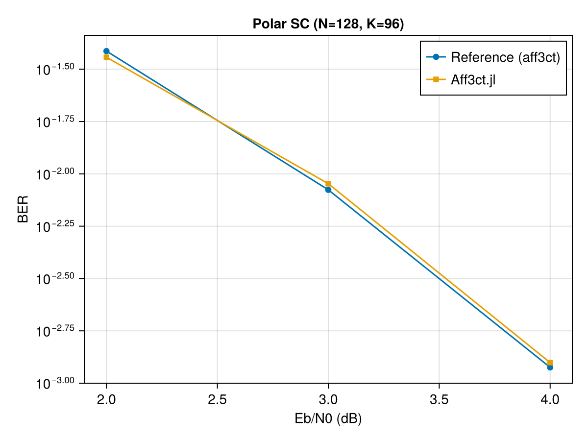
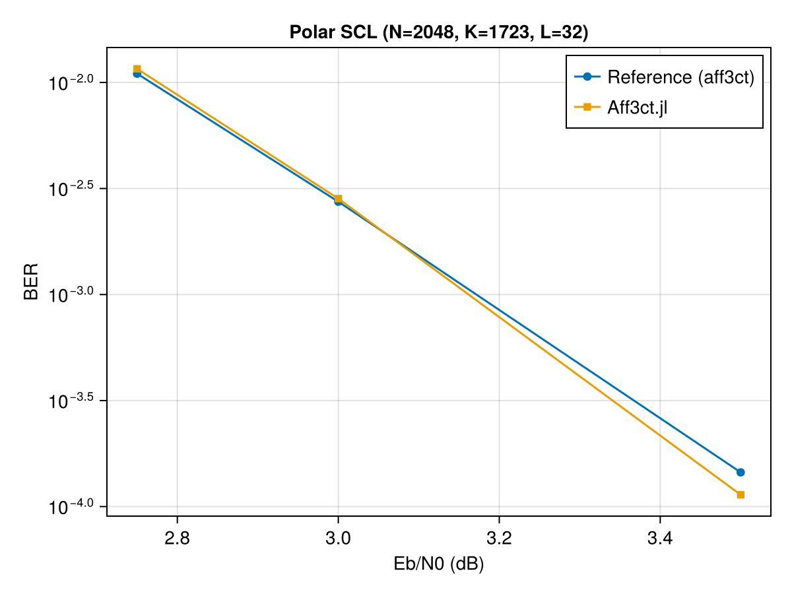

Polar Codes
API Reference
Aff3ct.generate_frozen_bits_ga — Function
generate_frozen_bits_ga(K, N; design_snr=0.0) -> Vector{Bool}Generate frozen bit positions using Gaussian Approximation (GA). Returns a Vector{Bool} of length N where true = frozen, false = info.
Aff3ct.generate_frozen_bits_5g — Function
generate_frozen_bits_5g(K, N) -> Vector{Bool}Generate frozen bit positions using the 5G-NR standard tables (N ≤ 1024).
Aff3ct.PolarEncoder — Type
PolarEncoder(K, N, frozen_bits::AbstractVector{Bool})Systematic polar encoder for codeword length N and K information bits. frozen_bits is a Vector{Bool} of length N (true = frozen).
Aff3ct.PolarSCDecoder — Type
PolarSCDecoder(K, N, frozen_bits::AbstractVector{Bool})Successive Cancellation (SC) decoder for polar codes.
Aff3ct.PolarSCLDecoder — Type
PolarSCLDecoder(K, N, L, frozen_bits::AbstractVector{Bool})Successive Cancellation List (SCL) decoder with list size L.
Verification against upstream references
Polar SC (N=128, K=96)
Reference: aff3ct/refs/POLAR/AWGN/BPSK/SC/Polar_N128_K96_SC_SYS_p32.txt
Configuration: systematic polar encoder, Gaussian Approximation (GA) frozen bits with adaptive sigma, Successive Cancellation (SC) decoder, BPSK modulation over Additive White Gaussian Noise (AWGN) channel.
| Eb/N0 (dB) | Reference BER | Reference frames |
|---|---|---|
| 2.0 | 3.86e-2 | 1 109 |
| 3.0 | 8.39e-3 | 3 786 |
| 4.0 | 1.19e-3 | 26 464 |
using Aff3ct, Random
ebn0_to_sigma(ebn0_db, R) = Float32(1.0 / sqrt(2 * R * 10^(ebn0_db / 10)))
function run_polar_sc(K, N, ebn0_db, n_frames; seed=42)
R = K / N
sigma = ebn0_to_sigma(ebn0_db, R)
fb = generate_frozen_bits_ga(K, N; design_snr=ebn0_db)
enc = PolarEncoder(K, N, fb)
dec = PolarSCDecoder(K, N, fb)
rng = Random.default_rng(); Random.seed!(rng, seed)
total_be = 0
for _ in 1:n_frames
U_K = Int32.(rand(rng, Bool, K))
X_N = encode(enc, U_K)
bpsk = Float32[1f0 - 2f0 * x for x in X_N]
Y_N = Float32[b + sigma * randn(rng, Float32) for b in bpsk]
llrs = Float32[2f0 * y / sigma^2 for y in Y_N]
V_K = decode(dec, llrs)
total_be += count(U_K .!= V_K)
end
return total_be / (n_frames * K)
end
ebn0s = [2.0, 3.0, 4.0]
ref_bers = [3.86e-2, 8.39e-3, 1.19e-3]
n_frames = [1109, 3786, 5000]
ber_values = Float64[]
println("Polar SC (N=128, K=96) verification:")
for (ebn0, ref_ber, nf) in zip(ebn0s, ref_bers, n_frames)
ber = run_polar_sc(96, 128, ebn0, nf)
push!(ber_values, ber)
ratio = ber > 0 ? ref_ber / ber : Inf
println(" Eb/N0=$(ebn0)dB: BER=$(round(ber, sigdigits=3)) ref=$(ref_ber) ratio=$(round(ratio, digits=2))x")
end
using CairoMakie
fig = Figure()
ax = Axis(fig[1, 1];
xlabel="Eb/N0 (dB)", ylabel="BER",
yscale=log10, title="Polar SC (N=128, K=96)")
scatterlines!(ax, ebn0s, ref_bers; label="Reference (aff3ct)", marker=:circle)
scatterlines!(ax, ebn0s, ber_values; label="Aff3ct.jl", marker=:rect)
axislegend(ax)
fig
Polar SCL (N=2048, K=1723, L=32)
Reference: aff3ct/refs/POLAR/AWGN/BPSK/SCL/Polar_N2048_K1723_SCL_L32_NO_SPC_p32.txt
Configuration: systematic polar encoder, GA frozen bits (adaptive sigma), Successive Cancellation List (SCL) decoder with list size 32, BPSK-AWGN.
| Eb/N0 (dB) | Reference BER | Reference frames |
|---|---|---|
| 2.75 | 1.10e-2 | 250 |
| 3.00 | 2.74e-3 | 534 |
| 3.50 | 1.45e-4 | 4 280 |
using Aff3ct, Random
ebn0_to_sigma(ebn0_db, R) = Float32(1.0 / sqrt(2 * R * 10^(ebn0_db / 10)))
function run_polar_scl(K, N, L, ebn0_db, n_frames; seed=42)
R = K / N
sigma = ebn0_to_sigma(ebn0_db, R)
fb = generate_frozen_bits_ga(K, N; design_snr=ebn0_db)
enc = PolarEncoder(K, N, fb)
dec = PolarSCLDecoder(K, N, L, fb)
rng = Random.default_rng(); Random.seed!(rng, seed)
total_be = 0
for _ in 1:n_frames
U_K = Int32.(rand(rng, Bool, K))
X_N = encode(enc, U_K)
bpsk = Float32[1f0 - 2f0 * x for x in X_N]
Y_N = Float32[b + sigma * randn(rng, Float32) for b in bpsk]
llrs = Float32[2f0 * y / sigma^2 for y in Y_N]
V_K = decode(dec, llrs)
total_be += count(U_K .!= V_K)
end
return total_be / (n_frames * K)
end
ebn0s = [2.75, 3.0, 3.5]
ref_bers = [1.10e-2, 2.74e-3, 1.45e-4]
n_frames = [250, 534, 4280]
ber_values = Float64[]
println("Polar SCL (N=2048, K=1723, L=32) verification:")
for (ebn0, ref_ber, nf) in zip(ebn0s, ref_bers, n_frames)
ber = run_polar_scl(1723, 2048, 32, ebn0, nf)
push!(ber_values, ber)
ratio = ber > 0 ? ref_ber / ber : Inf
println(" Eb/N0=$(ebn0)dB: BER=$(round(ber, sigdigits=3)) ref=$(ref_ber) ratio=$(round(ratio, digits=2))x")
end
using CairoMakie
fig = Figure()
ax = Axis(fig[1, 1];
xlabel="Eb/N0 (dB)", ylabel="BER",
yscale=log10, title="Polar SCL (N=2048, K=1723, L=32)")
scatterlines!(ax, ebn0s, ref_bers; label="Reference (aff3ct)", marker=:circle)
scatterlines!(ax, ebn0s, ber_values; label="Aff3ct.jl", marker=:rect)
axislegend(ax)
fig